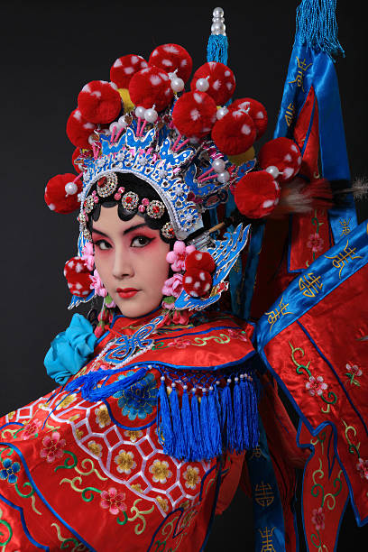
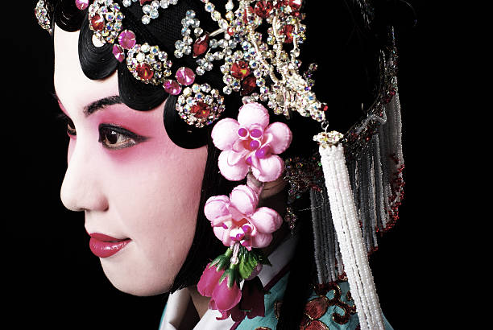
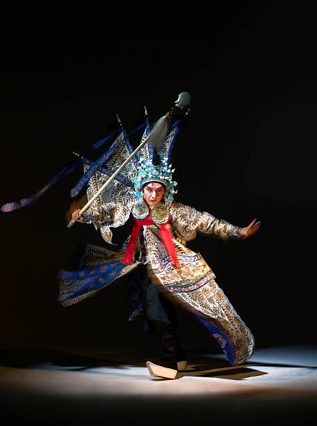
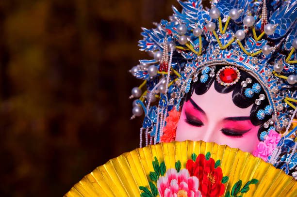
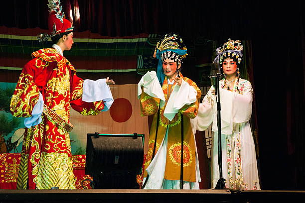
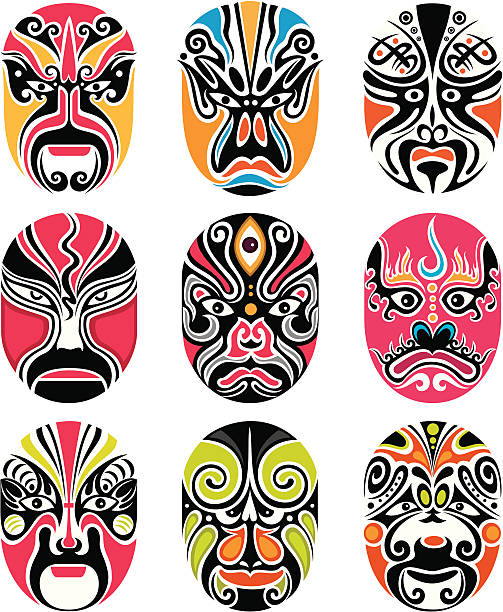
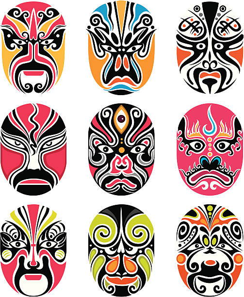

Peking Opera is known as the "national theatre" of China. It originated in Beijing, China in the 17th century and combines music, vocal performance, mime, dance and acrobatics. With the influence of Beijing Opera, there are several other arts arose from it. For example, people design the special opera masks as a specialization of painting and makeups. Beijing Opera also has cultural influence on Chinese people's daily life.
Performances
    Masks
 
